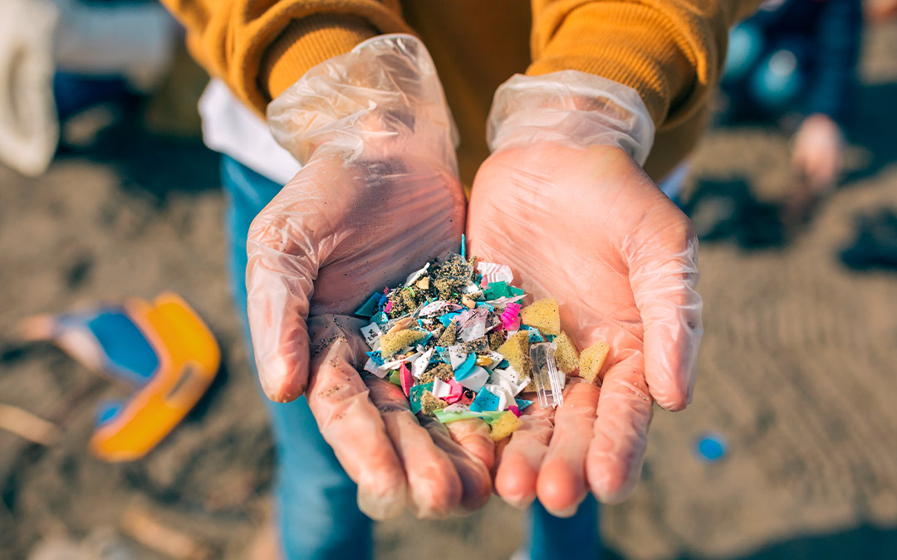
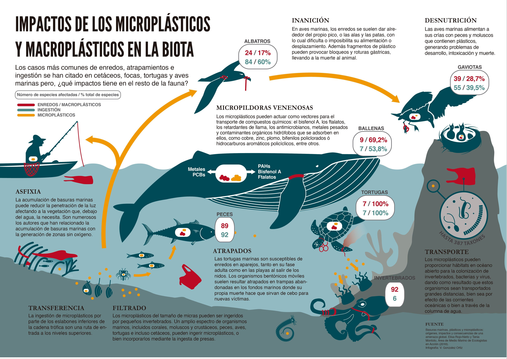
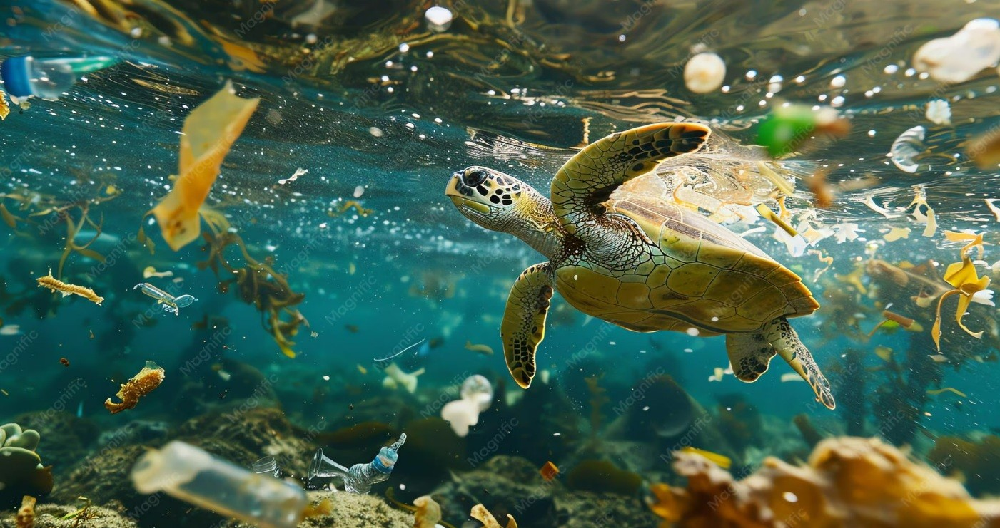
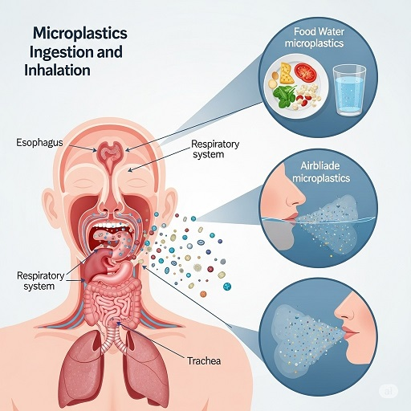
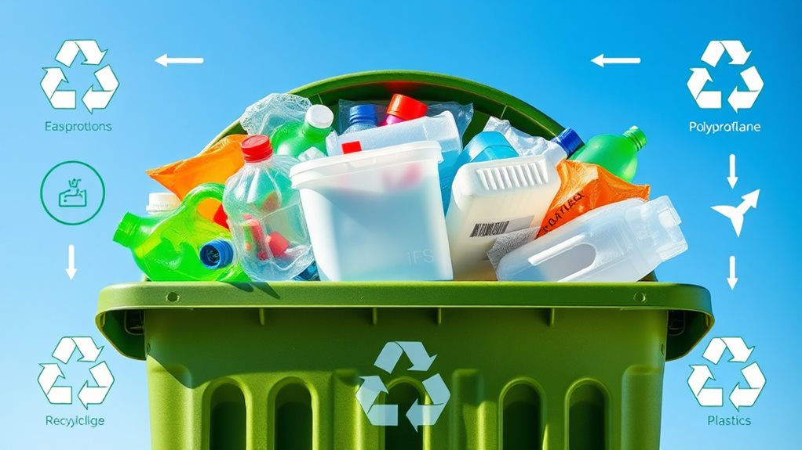

¿Qué son los microplásticos?
Son fragmentos de plástico menores a 5 mm. Debido a su tamaño diminuto se los conoce como "contaminante invisible".
Primarios
Fabricados directamente en tamaños microscópicos. Presentes en cosméticos, pasta dental y fibras textiles.
Secundarios
Surgen por la degradación de botellas, bolsas, redes de pesca y otros plásticos.

¿Cómo se originan?
Basura mal gestionada
Bolsas y botellas abandonadas se fragmentan con el tiempo.
Lavado de ropa
Una prenda sintética puede liberar hasta 700.000 fibras por lavado.
Neumáticos
El desgaste de ruedas libera partículas plásticas al ambiente.
Pinturas
El deterioro de pinturas y señalizaciones genera microplásticos.
Impacto Ambiental
Océanos
Más de 14 millones de toneladas descansan en los fondos marinos.
Suelos
Alteran la estructura del suelo y afectan organismos esenciales.
Aire
Han sido detectados en la Antártida y en el Everest.
Cadena Alimentaria
Se acumulan progresivamente desde organismos pequeños hasta humanos.


Impacto en la Salud
En Animales
Provocan inflamación, estrés y problemas reproductivos.
En Humanos
Se han encontrado en sangre, pulmones y placenta.
Riesgos
Transportan BPA y ftalatos relacionados con alteraciones hormonales.

¿Qué podemos hacer?
Acción Individual
Reducir plásticos de un solo uso y utilizar productos reutilizables.
Industria
Implementar filtros y sistemas de tratamiento más eficientes.
Gobiernos
Promover leyes de reciclaje y control de residuos plásticos.

Conclusión
Los microplásticos son consecuencia de décadas de uso irresponsable del plástico. Reducir su origen es una tarea colectiva que requiere acciones individuales, empresariales y gubernamentales.